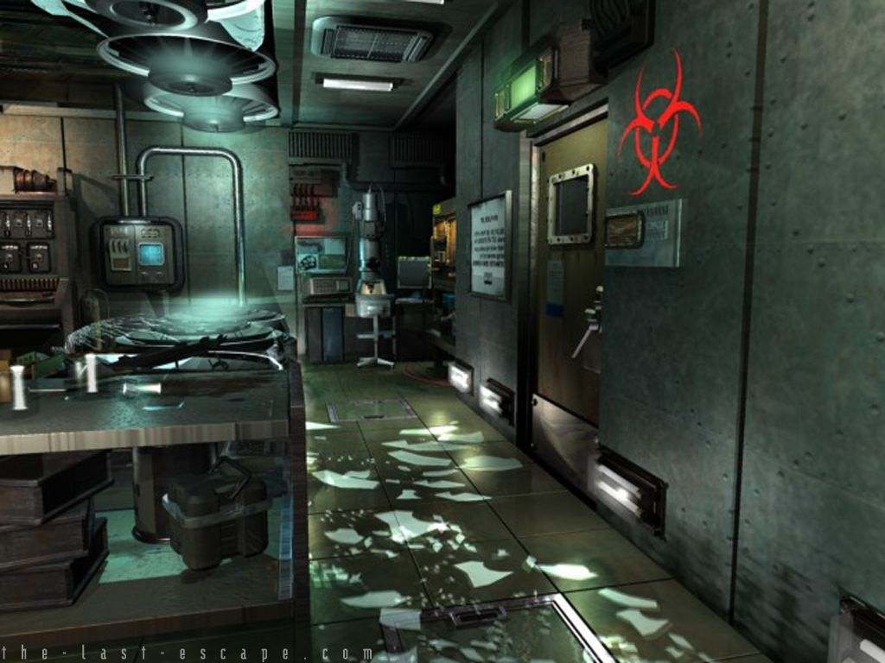

Inicio
Has abierto la puerta (Estás aquí) *
Contacto
Has logrado abrir la puerta con la llave
Genial!!
Has logrado entrar a la habitacion.

Ahora puedes intentar
Inspeccionar habitacion
Volver al pasillo